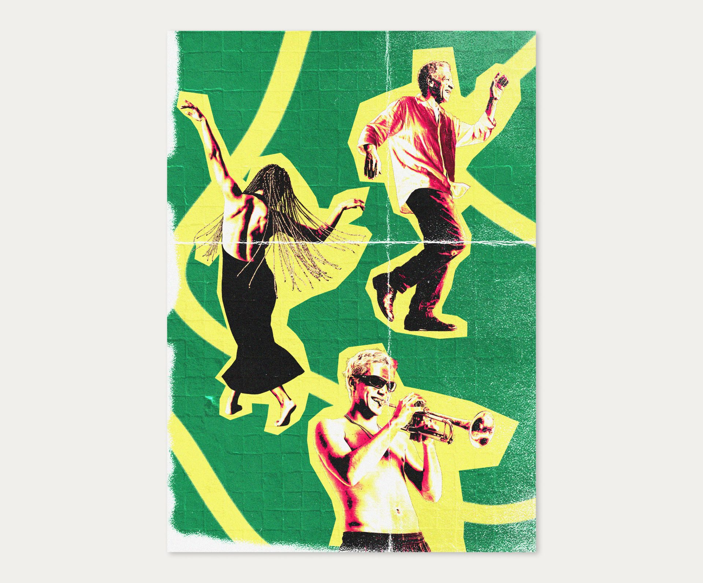
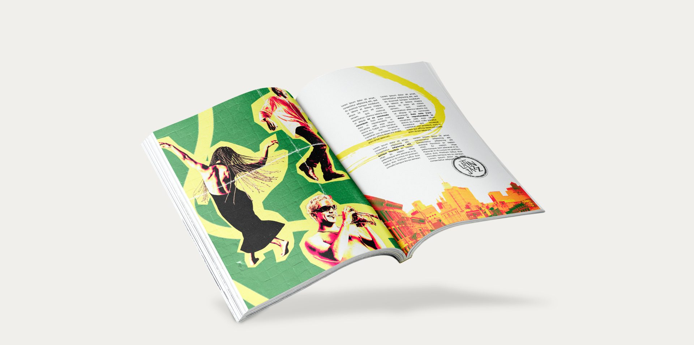
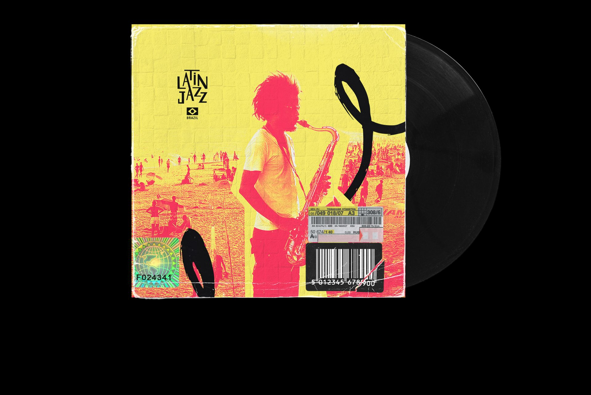
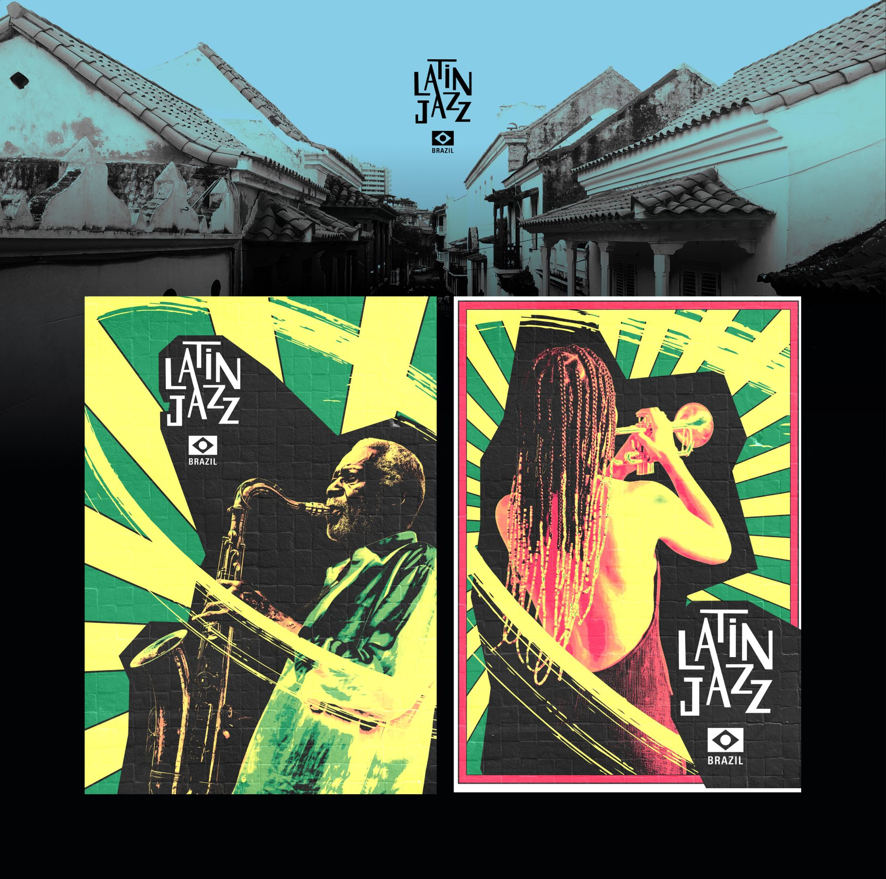
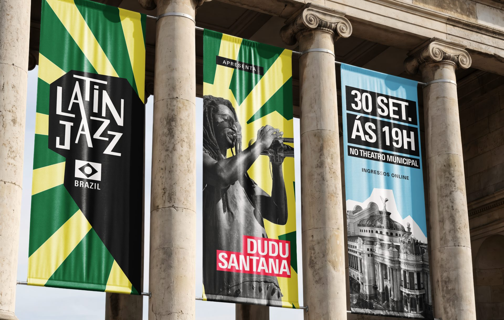

LatinJazz
Brazil
Uma sonoridade que também pertence ao Brasil: Tropicália, colagem e um logo desenhado à mão para um projeto da Novo Traço.
- Cliente
- Novo Traço
- Papel
- Direção de arte
- Escopo
- Logotipo, identidade visual, motion e aplicações
Conceito
O conceito visual do LatinJazz Brazil nasce do reconhecimento de uma sonoridade que pertence ao Brasil. A identidade traduz essa afirmação por meio de cores vibrantes inspiradas na Tropicália, texturas, traços e composições expressivas que refletem a energia brasileira.
Assim como o próprio Latin Jazz é construído por encontros e atravessamentos culturais, o universo visual explora contrastes, ritmos e diferentes camadas gráficas para criar uma estética viva, diversa e em constante movimento.
Logo
Logo desenhado à mão, com traços orgânicos que refletem expressividade, movimento e dinamismo. Suas variações para animação exploram elementos abstratos inspirados no universo da música, como figuras de musicistas, rostos, notas musicais e outros símbolos.
Cores
A paleta é construída a partir de cores vibrantes que dialogam com o universo tropical, expressivo e plural do Brasil. Amarelo, verde, rosa, azul, branco e preto convivem em contraste, como camadas de uma mesma colagem.
As cores vêm direto do sistema da Novo Traço, marca-mãe do projeto, o que mantém a conexão entre os dois universos.
-
Illuminating
- HEX
- #F6EA60
- RGB
- 246 234 96
- Pantone
- 13-0647 TCX
-
First Tree
- HEX
- #00733C
- RGB
- 0 115 60
- Pantone
- 18-6031 TCX
-
Red Pink
- HEX
- #FB2A54
- RGB
- 251 42 84
-
Tropical Breeze
- HEX
- #87CDE7
- RGB
- 135 205 231
- Pantone
- 13-4307 TCX
-
Cloud Dancer
- HEX
- #F0EFEB
- RGB
- 240 239 235
- Pantone
- 11-4201 TCX
-
My Soul
- HEX
- #020305
- RGB
- 2 3 5
- Pantone
- 19-4010 TCX
Tipografia
A Univers traz versatilidade por meio da sua ampla variedade de pesos, e organiza datas, nomes e informações com clareza. Já a Margem adiciona simpatia, leveza e brasilidade aos textos.





Uma marca Novo Traço
O LatinJazz Brazil é um projeto da Novo Traço. Ele compartilha com a marca-mãe as cores, a Univers, a Margem e o gesto feito à mão, mas ganha um vocabulário próprio de colagem, raios de sol e papel amassado, pensado para se mexer nas redes, nos telões e na rua.